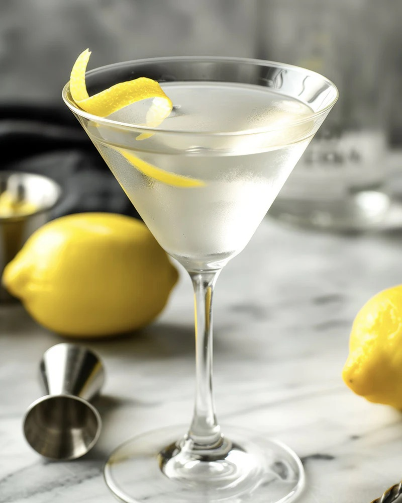

Citrus Elderflower Martini
Home

Description
Ok I lied it's not really a martini. Everyone is calling their fave drink a martini these days and I'm sorry but if it's got 4+ ingredients it's not a martini, it's a cocktail. Move on. But anyway I got your attention, so enjoy!!
Ingredients
- 2oz atxa white vermouth
- 1oz gin
- 1 tsp elderflower syrup
Steps
- Fill cocktail shaker — another sign we're not making a martini — with ice. Shake the ever loving shit out of it, preferaby til your fingers go a little numb.
- Pour into glass. Sip while lasagna bakes. Sip another while eating lasagna.